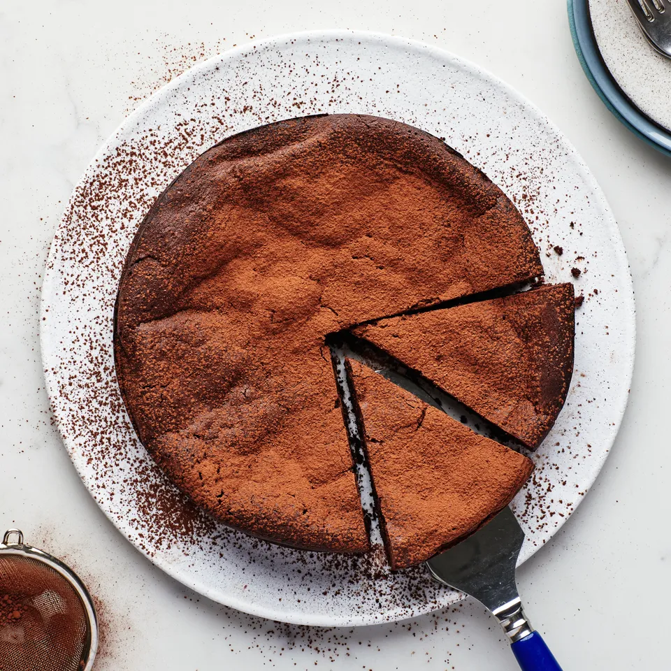

Flourless chocolate cake
Ingredients
- ½ cup (4 oz.) fine-quality bittersweet chocolate (not unsweetened)
- 1 stick (113 g) unsalted butter
- ¾ cup (149g) sugar
- 3 large eggs
- ½ cup unsweetened cocoa powder plus additional for sprinkling
Step 1
Preheat oven to 375°F and butter an 8-inch round baking pan. Line bottom with a round of parchment paper and butter paper.
Step 2
Chop chocolate into small pieces. In a double boiler or metal mixing bowl set over a saucepan of barely simmering water melt chocolate with butter, stirring, until smooth. Remove top of double boiler or bowl from heat and whisk sugar into chocolate mixture. Add eggs and whisk well. Sift ½ cup cocoa powder over chocolate mixture and whisk until just combined. Pour batter into prepared pan and bake in middle of oven 25 minutes, or until top has formed a thin crust. Cool cake in pan on a rack 5 minutes and invert onto a serving plate.
Step 3
Dust cake with additional cocoa powder and serve with sorbet if desired. (Cake keeps, after being cooled completely, in an airtight container, 1 week.)
